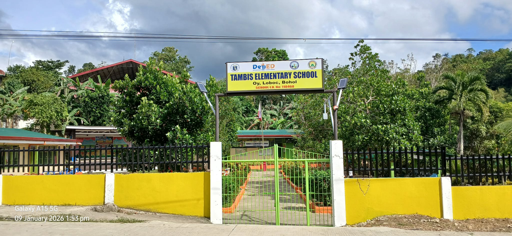
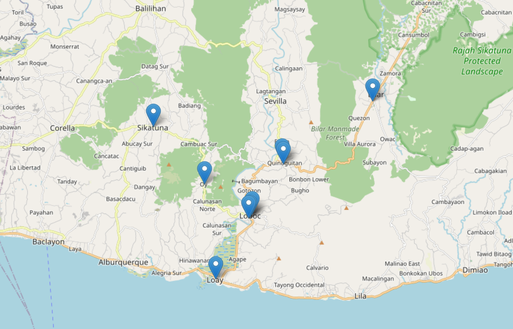
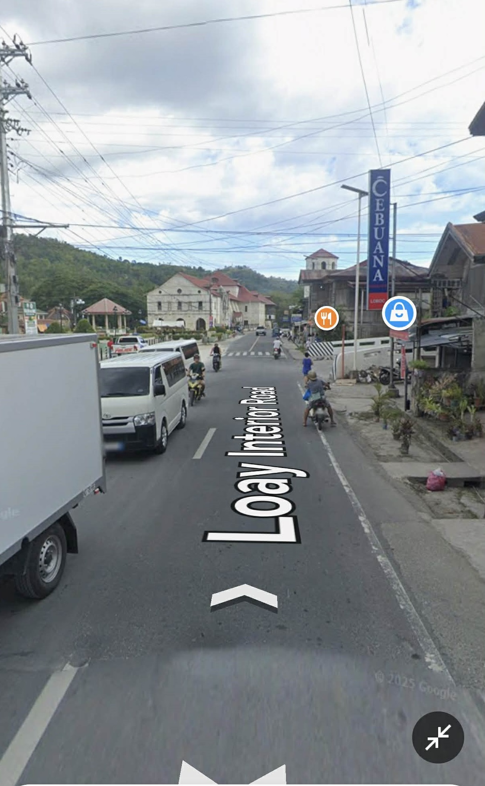
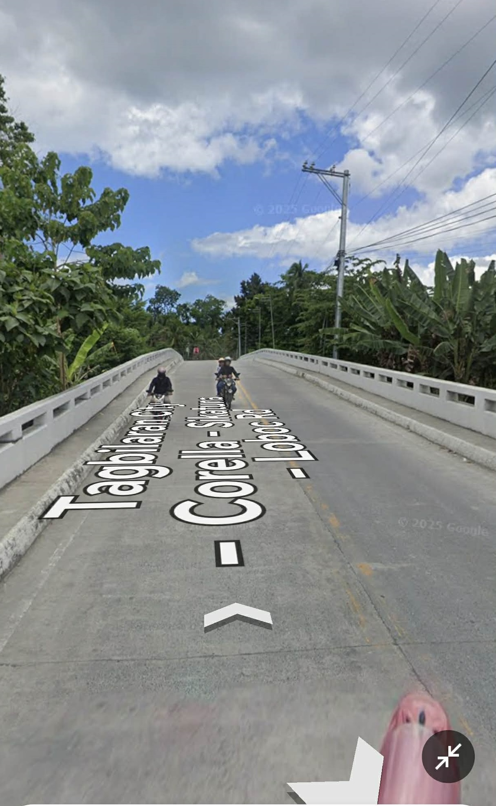
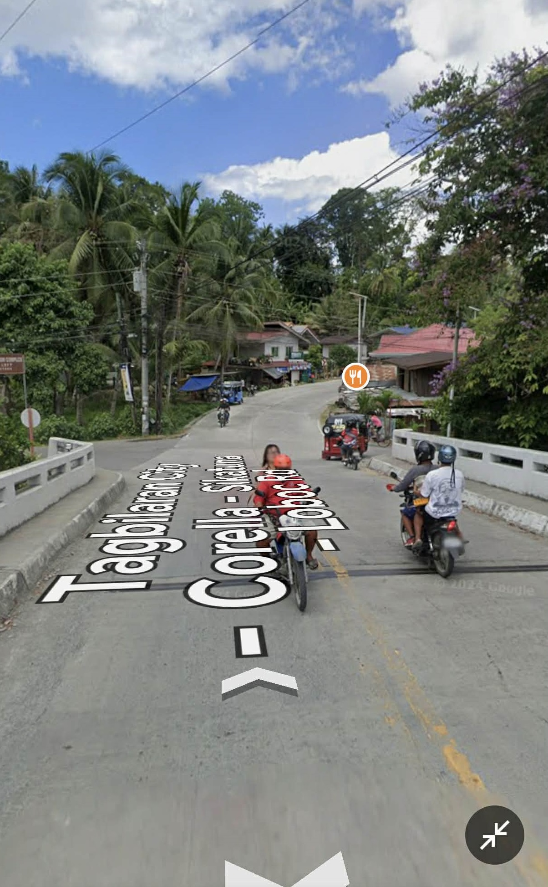
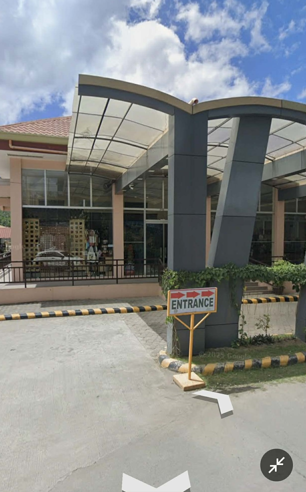
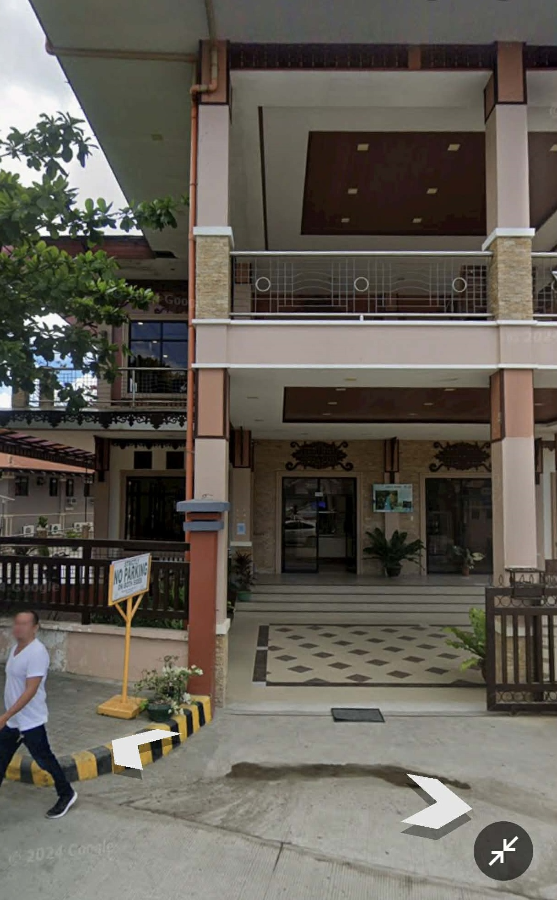
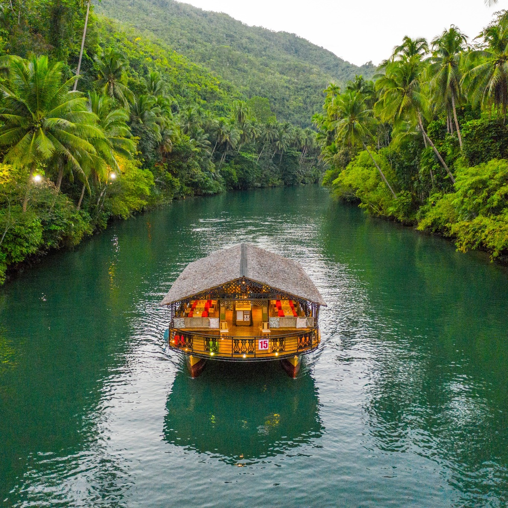

Welcome to Tambis Elementary School
Experience a school where tradition, talent, and values shine - from award-winning musical ensembles to a thriving, improved learning environment.
Tambis Elementary School
Distance from Sikatuna: 6.15 km.
Estimated travel time: 6 - 9 minutes
Average Speed: 40 - 60 km/h
Mode of Transportation: Motorcycle / Car / PUV

Name of School: Tambis Elementary School
Year Established: 1930
Name of School Head: VIDAL M. INOG
Contact Number: 09606773901
NName of SPTA President: CLEOPAS E. TAC-AN
Number of Teachers: 6
Enrolment: 139
Special Features:
⭐ Tambis Elementary Rondalla-Participated in the Guinness World Record on Largest Rondalla
⭐ Ukulele and Flute Ensemble
⭐ Partner with the Philippine Values Education Program
⭐ Most Improved School Environment Award (Loboc District Pasigarbo 2025)
Breakfast Information:
🕡 Breakfast available at 7:00 AM.
Via Sikatuna Map

🕗 8:10 AM – Off to Heritage Building
Direction:
•From Loboc NHS:➡ Turn right at Cebuana Pawnshop then Cross the Bailey Bridge, then turn left to reach the gate way to the Loboc Tourism Complex then proceed to the Loboc Heritage Building.

Turn left to Cebuana Pawnshop

You will cross the Bailey Bridge

Turn left after Bailey Bridge

You will reach at the gate way to the Loboc Tourism Complex.

Proceed to the Loboc Heritage Building.
Arrival Instructions:
ℹ️ Enter the Tourism Complex
ℹ️ Proceed to the Second Floor of the Heritage Building
Welcome to Loboc Heritage Building - The Conference Venue
“The journey converges at the heart of Loboc - where history and leadership meet.”
Loboc Heritage Building
Distance from Loboc NHS: 7.14 km.
Estimated travel time: 7 - 11 minutes
Average Speed: 40 - 60 km/h
Mode of Transportation: Motorcycle / Car / PUV

Location: Villaflor, Loboc, Bohol
Conference Venue Map
The Program
🕗 8:10 – 8:30 AM
Meet-Up & Photo Moment
🕗 8:30 AM
Opening Program
❄️ Acknowledgment of Attendees
❄️ Special Recognition
🎉October–January Celebrators
🎺Loboc Brass Band “Hay Que Celebrar”
❄️ Singing of Hymns
🎤 Selected Loboc District Teachers
🎵 Lupang Hinirang
🎵 Bagong Pilipinas
🎵 Bohol Hymn
🎵 Loboc Hymn
❄️ Invocatory Song
🎤 Selected Loboc District Teachers
❄️ Welcome Remarks
👤 Ma. Buenaventurada G. Socorin
Public Schools District Supervisor – Loboc
👤 Hon. Raymond G. Jala
Municipal Mayor, Loboc
❄️ Symbolic Gesture of Collaboration
🤝 LGU and Deped
❄️ Audio-Visual Presentation
🖥️ "Loboc: A Legacy of Culture, Learning, and”
Resilience”
❄️ Cultural Presentation
🎤 Loboc Children’s Choir
❄️ Message
👤 Fay C. Luarez EdD, PhD TM, CESO VI
Schools Division Superintendent
❄️ Meeting Proper
🕥 11:45 AM – 1:00 PM
Welcome to Loboc Floating Restaurant
Enjoy a serene lunch aboard a floating restaurant while cruising the iconic Loboc River—where nature, culture, and cuisine meet.
Loboc Floating Restaurant

🌊 Loboc River – Cultural Notes
Historical Significance
The Loboc River has been a central part of the community since the Spanish colonial period.
Early settlers used the river for transportation, fishing, and trade, making it a lifeline for local livelihood.
Tourism & Traditions
The river is famous for its floating restaurants, where visitors can enjoy Filipino meals while cruising.
Traditional riverboat rides often include live folk music performances, showcasing Boholano culture.
Annual festivities and local rituals sometimes feature the river as a backdrop, highlighting its role in town celebrations.
Natural & Spiritual Importance
The Loboc River is often associated with community gatherings and religious processions called "Sambat".
Locals view it as a symbol of life and continuity, linking past generations to the present.
Surrounding areas are rich in flora and fauna, blending natural beauty with cultural identity.
Cultural Preservation
Efforts have been made to preserve the river’s ecosystem and heritage, maintaining traditional practices alongside modern tourism.
The river and its surroundings reflect the blend of history, culture, and community life that defines Loboc.
Activities
🕐 1:00 PM – Start of Activities
❄️ Surprise… Surprise… Surprise
❄️ Resumption of Meeting
❄️ Ceremonial Commitment
🎵 Song:“That’s All I Want From You”
🎤 Selected Loboc District Teachers
🤝 Commitment Sharing- 1 PSDS Representative
per Congressional District
❄️ Giving of Certificates & Souvenirs
❄️ Words of Gratitude
👤 Estrellieta C. Dulalas
LCES Principal
❄️ Closing Prayer
👤 Selected Deped Loboc District Personnel
🎤 Master of Ceremonies:
GAY F. LERION
“Thank you for walking this journey with us. May Loboc remain a piece of heaven you carry into your leadership.”
🧧 Extras:
Group Photo Gallery
Click this link to upload and view photos.
Share your Impression or Insights